學校教「怎麼算」，
麥思練「怎麼想」
給國小 1–6 年級的線上數學思維課。孩子跟著小恐龍麥思在故事裡解謎，影片講師把觀念講清楚、真人輔導老師在旁邊巡看每個孩子的螢幕。
- 國小 1–6 年級
- 每 Level 45 堂 × 50 分鐘
- 雙師・線上 1:6 小班
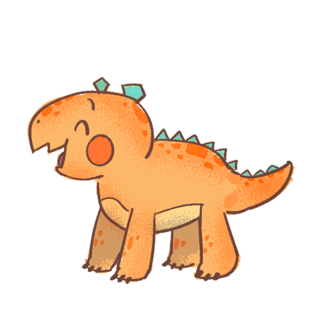
三十秒看完麥思數學
- 是什麼：麥思數學是橘子蘋果程式學苑的線上數學思維課程，參照美國數學思維邏輯學習系統進行在地化調整，練的是思考方法而不是計算速度。
- 給誰：國小 1–6 年級的孩子；六年級報名前須先完成程度測驗，其他年級開課前也會做程度評估來決定起點。
- 怎麼上：Level 2 到 Level 5，每個 Level 45 堂、每堂 50 分鐘；雙師教學、線上 1:6 小班，用看圖說故事與解謎遊戲推進。上課需筆電或桌機，平板無法上課。
- 怎麼開始：先免費試聽一堂，實際看孩子的反應，再決定要不要往下走。
「數學不只是計算」不是補習班話術，是課綱本來就寫的
先看兩份公開資料，再決定要不要多上一門數學。
教育部國教署在 TIMSS 2023 的說明裡寫著：「我國四和八年級學生對於數學和科學仍多為不喜歡，然此類學習熱情與智識增長無法兼得的情形並非我國獨有，且與 TIMSS 2019 相比，我國學生的學習自信已呈現改善趨勢。」
那台灣的數學課到底想教出什麼？台灣自己在 TIMSS 官方文件裡申報的數學課程目標，一共列了六項：
- 觀察規律pattern observation
- 計算computation — 評量與考卷幾乎都集中在這一格
- 抽象化abstraction
- 推理reasoning
- 溝通communication
- 問題解決solving problems
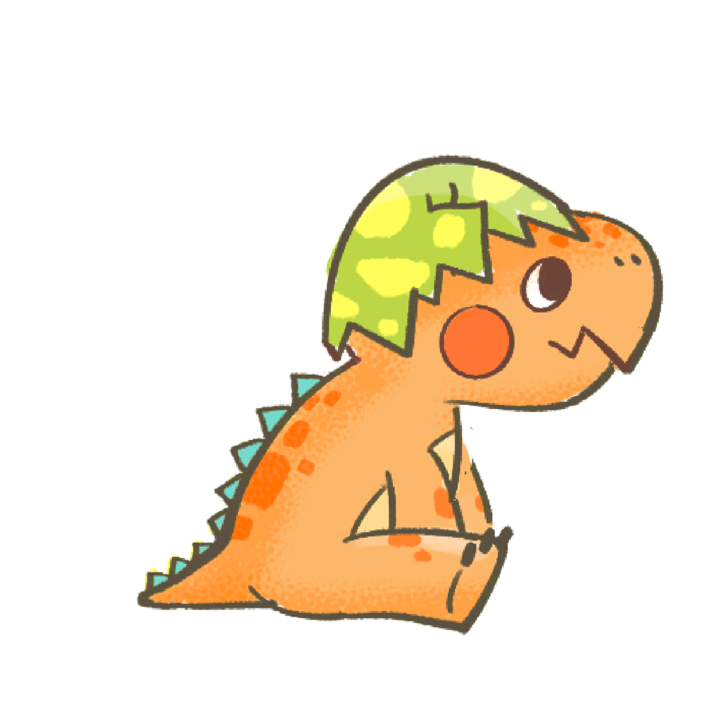
六顆星裡，評量與考卷把「計算」那顆練到發亮，另外五顆很少被點到——不是不重要，是很難用考卷練。麥思做的事情很單純：把那五顆星，變成孩子願意動手去試的題目，一顆一顆點亮。
那實際上是怎麼做到的？
橘子蘋果教學部老師錄了一支影片，用實際的題目講給你看：為什麼不用背公式，孩子也能把題目解出來。
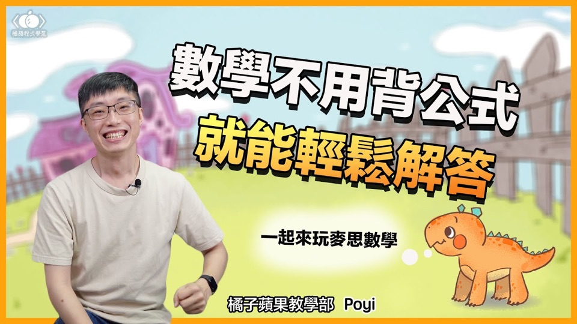
《如何讓孩子不再懼怕數學？跟著小恐龍麥思一同學習》｜橘子蘋果程式學苑・教學部・2 分 09 秒
看圖說故事的解謎世界
官方課程目的寫的是：「透過看圖說故事、解謎活動、遊戲互動，提升學生對於數學的喜好與興趣。並藉由引導思考與探索知識的方式，幫助學生理解數學概念，以數學的方式設法解決問題。」這三件事在課堂上長什麼樣子——
看圖說故事
題目先是一張圖、一段情節。孩子要先弄懂故事裡發生了什麼事，才知道自己要解的是什麼問題——這一步就是「把生活翻譯成數學」。
解謎活動
答案不會寫在題目旁邊。孩子要自己找線索、推可能性、排除錯的路，答對的成就感來自「我想出來的」，不是「我算完了」。
遊戲互動
數獨、踩地雷、路徑搜尋、覆面算這些都直接寫在課程大綱裡。孩子以為在玩，實際在練的是條件判斷與逆向推理。
卡住的時候，孩子手上有三招
這三招直接寫在 Level 2 的官方課程大綱裡。寫評量練的是「這題會不會」，麥思練的是「不會的時候，先做什麼」——這是它跟寫評量最大的差別。
不知道從哪開始？先大膽試一個，錯了也沒關係——錯的結果會告訴你該往哪邊修。
像是：？＋？＝10，先試 5＋5，再照線索一步步調整。
從結局倒著走回來。知道最後剩多少，就能一步一步推回一開始有多少。
像是：路上吃掉 4 顆糖、到家剩 3 顆——那出發時帶了幾顆？
題目太繞的時候，把它畫出來。圖一畫完，數量關係常常自己浮出來。
像是：哥哥比麥思高、麥思比托尼高——畫三條線，馬上看出誰最高。
三個策略名稱出自 Level 2 官方課程大綱；小例子為說明示意，實際課堂的題目跟著劇情走。
故事世界的夥伴
除了麥思，這個世界還有一整批會一路陪著孩子上課的角色——孩子記得住他們，就記得住那一堂在解什麼問題。停在卡片上可以暫停慢慢看。
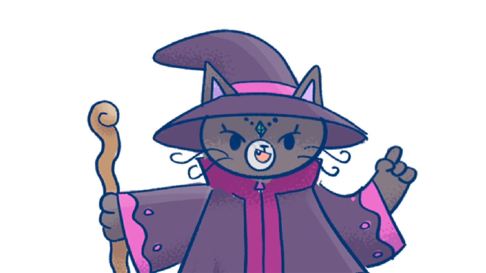
拍拍巫師
帶孩子進入麥思世界的引路人，謎題大多從他開始。
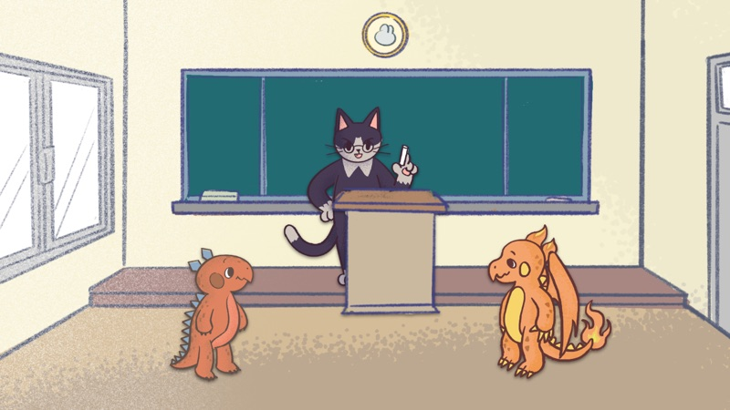
凱文老師
黑貓數學老師，負責在關鍵時刻把觀念講明白。
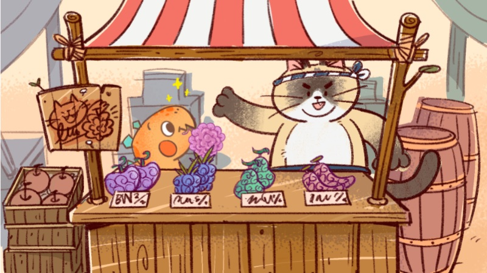
貓老闆
出場：貓老闆水果攤・減法的奧秘
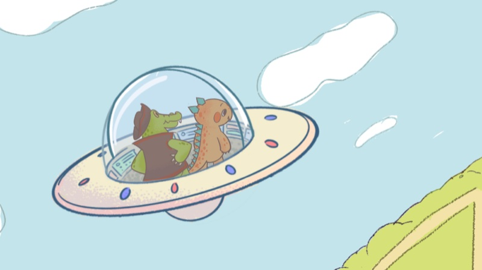
克洛克船長
帶麥思飛上太空的船長。出場：克洛克船長的故鄉
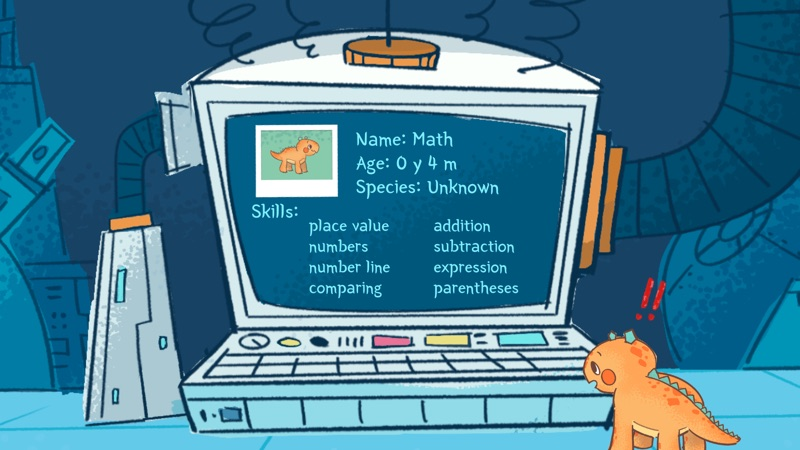
托尼
出場：托尼與未知數・托尼的超級密技
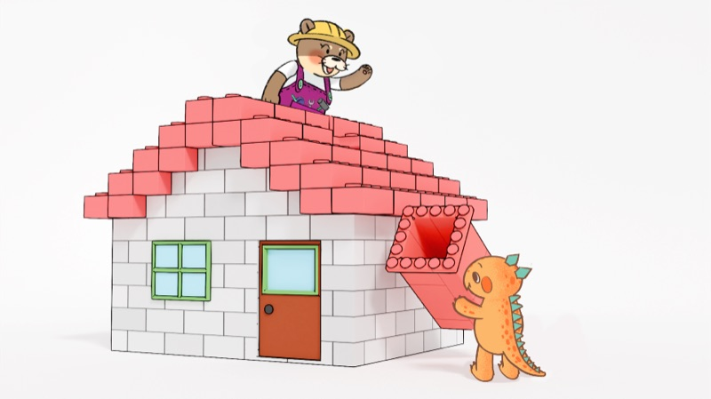
黛比
出場：新手建築師黛比
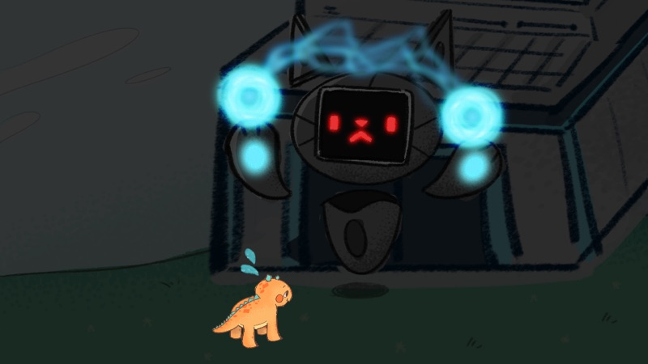
守門員史塔克
出場：守門員史塔克
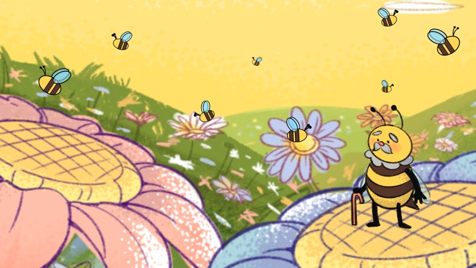
邦波比
出場：邦波比的日常・邦波比星球的驗證
教學法出處：官方課程概要載明，麥思數學參照美國數學思維邏輯學習系統進行在地化調整，融合數學思維、問題解決與策略應用；難度非按台灣年級課綱編排。
Level 2 到 Level 5：後面還有什麼，先讓你看完
麥思沒有 Level 1，最低從 Level 2 開始，一路到 Level 5。很多家長只知道孩子現在在上哪一級，不知道這條路通到哪裡——這張小徑就是走完全程的樣子。
四個 Level 串成的是一條完整的故事線：麥思從破蛋出生，到最後走上畢業典禮。孩子追的是劇情，練的是數學。
下面每張卡都標了「官方難度跨度」——那是指這個 Level 的題型橫跨學校課綱的哪些年級，不等於要把那些年級的學校進度提前上完。孩子的起點一律由程度評估決定。
-
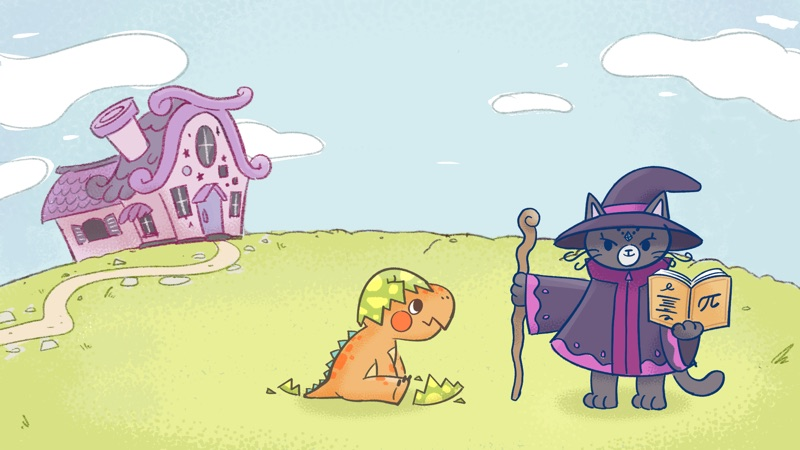
L2最佳年級：小 1–2
故事開始：麥思誕生在神秘巫師的家裡，跟著巫師面對第一批挑戰。
- 數字與位值、數線
- 加減法多策略與速算
- 解題策略：試誤法・反推法・畫圖法
- 覆面算與路徑搜尋
官方難度跨度
跨課綱 1–6 年級 -
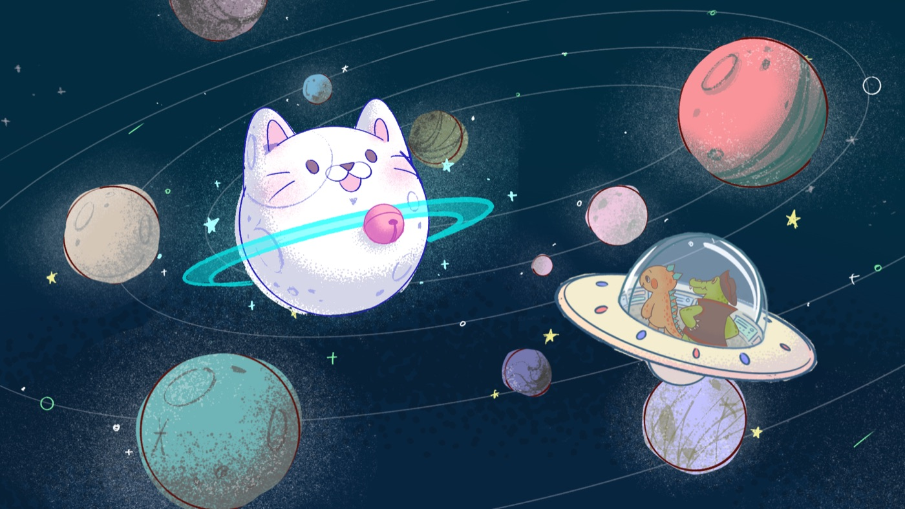
L3最佳年級：小 3–4
麥思跟著克洛克船長搭上飛船，一路往太空探險。
- 分數：等值、假分數、約分擴分
- 平面圖形：角、多邊形、周長與面積
- 乘法與除法：分配律、長除法
- 百數板與規律
官方難度跨度
跨課綱 1–6 年級 -
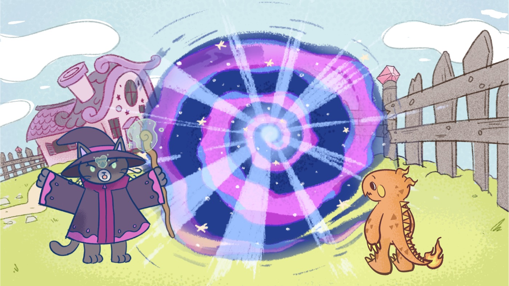
L4最佳年級：小 4–5
在各個星球之間旅行的麥思，身世之謎隨著探險一點一點解開。
- 二進制系統
- 排列組合：文氏圖、樹狀圖
- 機率：獨立與非獨立事件
- 邏輯推理：判斷真假、數獨與踩地雷
官方難度跨度
跨課綱 3–7 年級 -
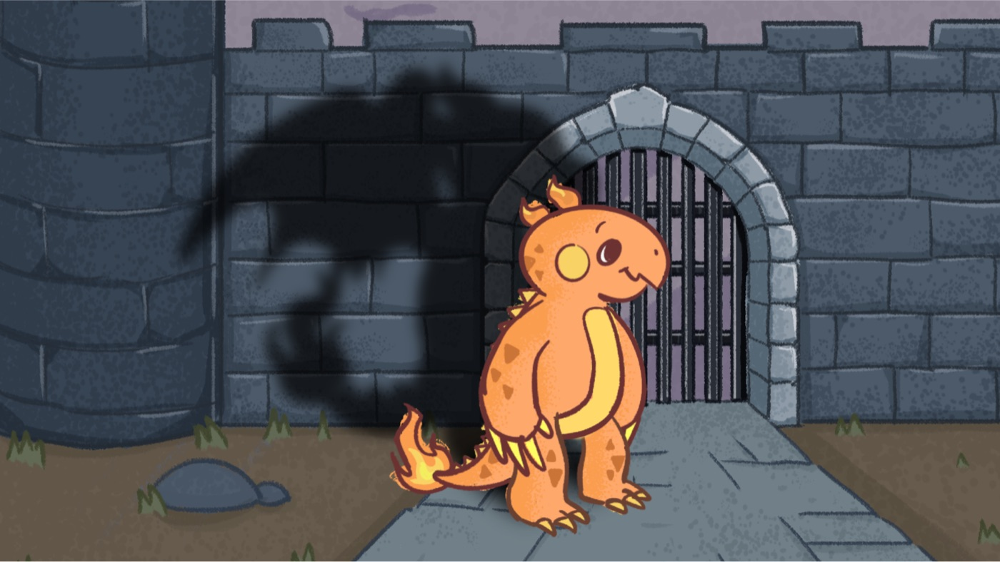
L5最佳年級：小 5–6
歷經考驗長大的麥思，迎向最終試煉，走上畢業典禮。
- 平方根與畢氏定理
- 統計：中位數、眾數、平均數、全距
- 序列：等差與等比
- 圓與扇形、正多面體與平面展開圖
官方難度跨度
跨課綱 4–8 年級（含國中）
走到 Level 4、Level 5，孩子碰到的是二進制、排列組合、機率、序列、平方根與畢氏定理——官方標示的難度跨度已經到課綱 4 至 8 年級，含國中範圍。這不是把學校進度提早教完，是換一種題目讓孩子練推理。
| Level | 最佳年級 | 堂數 | 官方難度跨度 |
|---|---|---|---|
| L2 | 小 1–2 | 45 堂 × 50 分鐘 | 跨課綱 1–6 年級 |
| L3 | 小 3–4 | 45 堂 × 50 分鐘 | 跨課綱 1–6 年級 |
| L4 | 小 4–5 | 45 堂 × 50 分鐘 | 跨課綱 3–7 年級 |
| L5 | 小 5–6 | 45 堂 × 50 分鐘 | 跨課綱 4–8 年級（含國中） |
那跟學校進度到底接不接得起來？把官方對照表攤開來看
官方課程概要為每一堂課標了對應的台灣課綱年級與主題。把 45 堂統計起來，每個 Level 實際落在哪些年級，是查得到的——不是一句「跨課綱」帶過。
31 堂標有課綱對照
主要落在小二（16 堂）
一千以內的數・基本的加減法・整數數線・加減應用問題解題策略・數量模式與推理
34 堂標有課綱對照
主要落在小四（17 堂）
三角形與四邊形・平面圖形的邊長與面積・乘法的意義與應用・直式乘法・除法與長除法
其中 1 堂已到國中程度
36 堂標有課綱對照
主要落在小四（13 堂）
同分母分數・二位小數・數線與分數小數・公因數與公倍數・質因數分解・指數律・負數
其中 18 堂已到國中以上（含 8 堂對照高中課綱）
36 堂標有課綱對照
主要落在小五（11 堂）與小六（8 堂）
柱體與錐體・體積・長條圖與折線圖・比與比值・速度・分數的乘除・四則混合運算
其中 13 堂已到國中程度
資料來源：《橘蘋麥思數學》Level 2–5 官方課程概要的逐堂「對照台灣課綱」欄位，統計截至 2026-08。每個 Level 共 45 堂，標有課綱對照的堂數如各卡所示（其餘為綜合練習或無直接對應單元）；一堂課可能同時對應多個年級，故各年級堂數相加會大於標註總堂數。橘色代表對應國中以上（七年級起，含少數十年級即高中）主題的堂數。要說清楚的是：麥思不是按台灣年級進度編排的同步複習課，這張表是讓你知道孩子會碰到學校的哪些單元，不是「提前上完那些年級」。
每一堂課，都是故事的一個章節
下面是課程平台上的真實畫面——每堂課都從一段劇情開始，數學藏在故事要解決的問題裡。孩子在意的是「這一關怎麼過」，練到的是題目背後的推理。場景會跟著 Level 一路變：從 Level 2 的草原小屋、水果攤，一路換到 Level 5 的太空飛船駕駛艙——孩子跟著劇情，也一路走進更難的題目。停在卡片上可以暫停慢慢看。
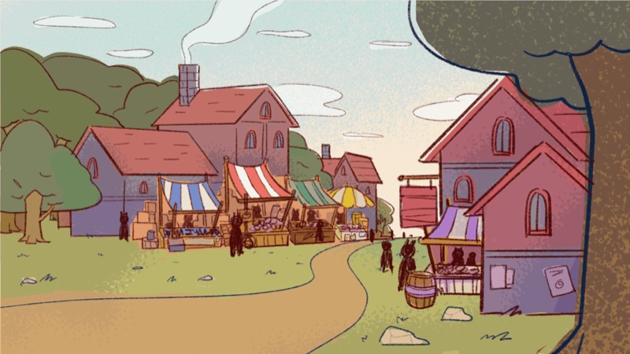
貓老闆水果攤L2
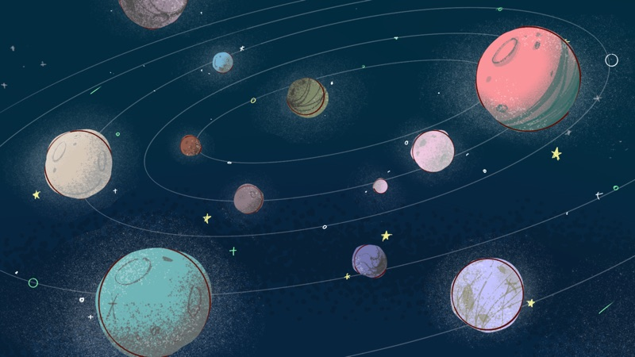
踏上太空之旅L3
麥思的誕生L2
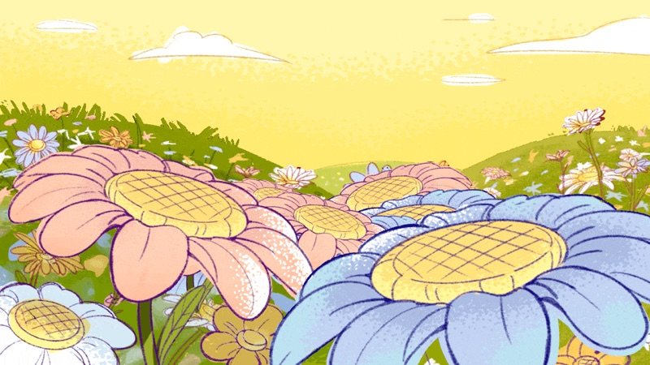
花園有多大L3
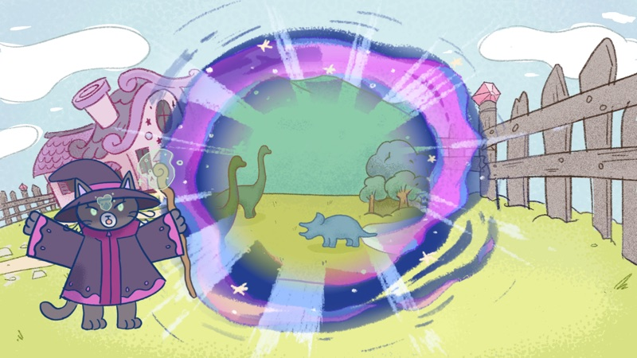
打開時空通道L4
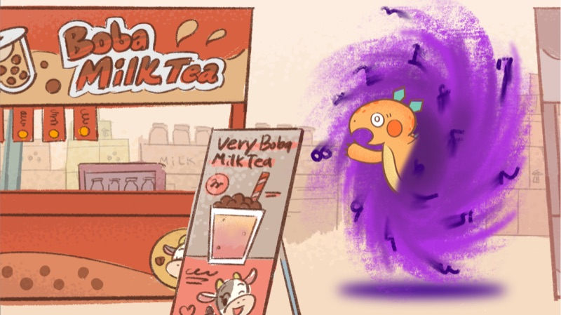
珍奶兌換券L3
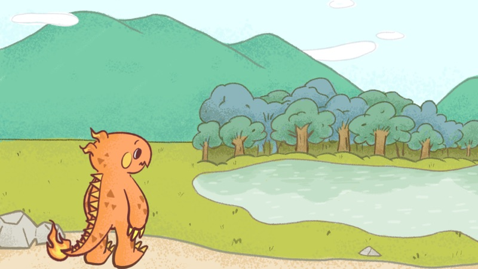
遠古恐龍世界L4
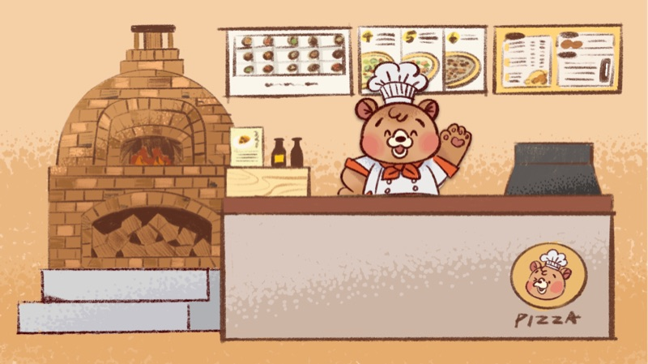
披薩店開張囉L5
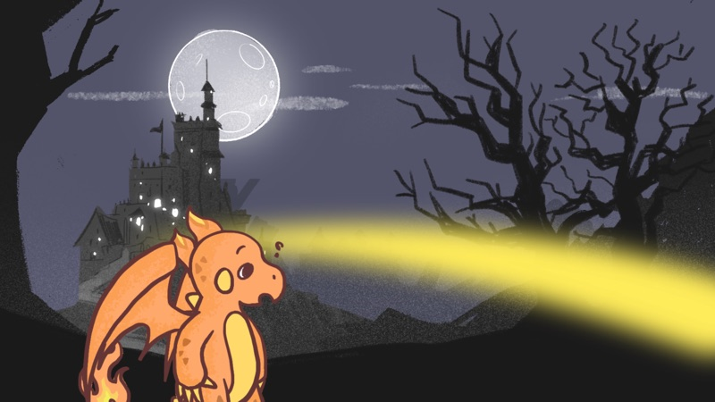
速率公式L5
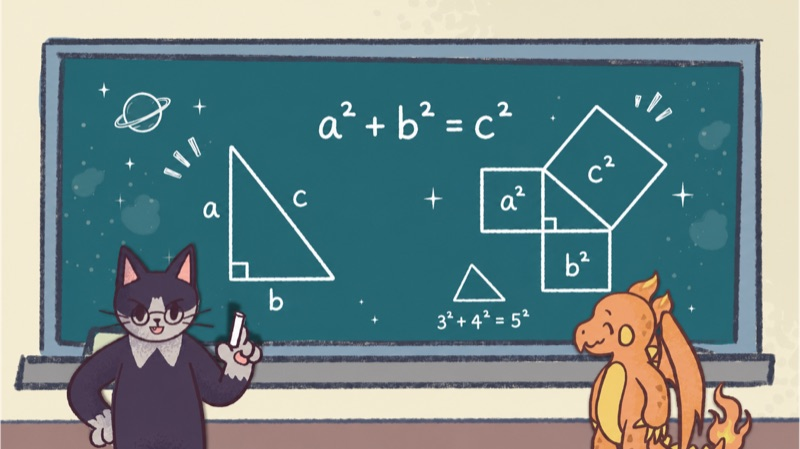
凱文老師的禮物L5
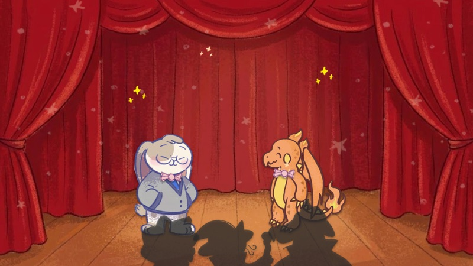
麥思的畢業典禮L5
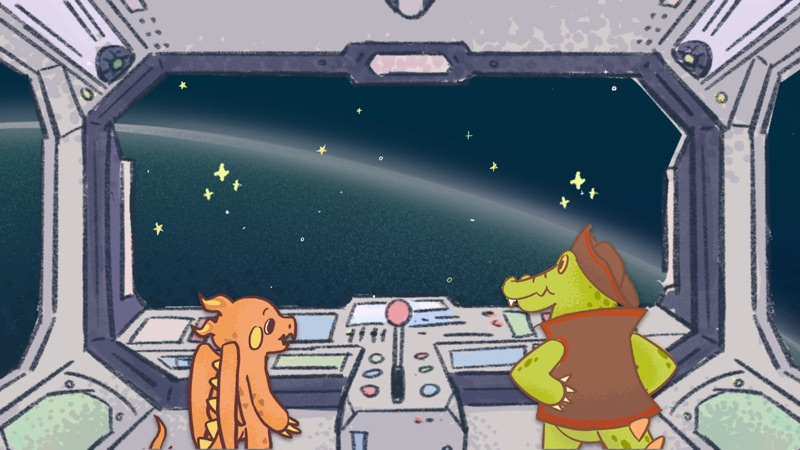
飛船駕駛艙L5
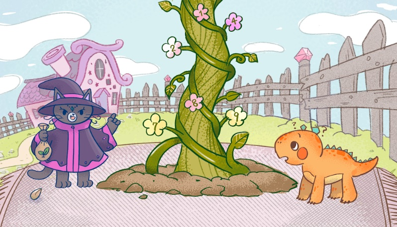
會開出數字的豆莖L2
看一下〈凱文老師的禮物〉那一張：黑板上寫的是畢氏定理 a² + b² = c²。這就是「Level 5 官方難度跨度已達國中課綱範圍」在課堂上長的樣子。
不確定孩子該從哪一個 Level 開始？
上課的時候，是誰在看著孩子
麥思是雙師制：一位影片講師負責把觀念講標準，一位真人輔導老師負責確認孩子真的跟上了。孩子卡住的時候，有兩層接手——系統先給，不夠再找真人。實際流程是這四步。
孩子看影片講師教學
觀念由影片講師講解，講法每一班都一樣、不會因老師而異。聽不懂的地方可以倒回去重看，同一段看第二次、第三次都行。
真人輔導老師全程巡看
上課時孩子要分享自己的螢幕，老師那端一眼就看得到每個孩子當下在做什麼、卡在第幾題。孩子沒開口說「我不會」，老師一樣看得出來。
同一題連續答錯三次，系統自動給解題說明
不用等、不用開口。孩子在同一題連續答錯三次，系統會自動跳出這一題的解題說明，讓他先自己看一次是哪一步想錯了——不必先舉手，也不用等老師輪到他。
還是不會，就按「我要發問」
孩子按下發問後進入排隊，老師依序一對一連線引導——引導他自己找出哪裡想錯了，而不是直接給答案。排隊等待的時候可以繼續看影片往下走，不會空等。
每週學習週報：老師每堂課後寫給你的紀錄
你不需要坐在孩子旁邊監督，也知道這一週發生了什麼。每堂課結束，老師會寫一份課程報告給你：
- 老師評語
- 今天先驗收上一課，接著進入新的一課。跟著麥思練乘法的分配律，做題時會先找出題目裡共通的乘數；計算直式乘法時位值有仔細對齊。這堂完成得很好，下週繼續。
依實際課程報告格式呈現，內容為示意（不含真實學員資料）。
一般的課後回饋，多半是一句「今天表現不錯，繼續加油」——你看完還是不知道孩子今天學到什麼。上面那段不一樣：它寫出孩子做題時先找出共通的乘數、計算時位值有對齊。同樣是一則訊息，你看得到的是他怎麼解這題，不只是他有沒有來上課。
孩子那一端：星星、皇冠與點亮的知識點
孩子每堂課的表現會變成星星與皇冠。而每學會一個知識點，成就榜上就會多亮一顆——孩子自己看得到還有哪幾格是暗的。
- 全部
- 數與量
- 計算
- 分數與小數
- 幾何
- 邏輯
- 機率
- 代數
- 位值
- 直式加法
- 試誤法
- 數線
- 等值分數
- 三角形的面積
- 機率的計算
- 階乘
成就榜依「數與量、計算、幾何、機率、代數⋯」分類，可切換檢視；上圖為示意。
家長看週報，孩子看自己的成就頁——同一份進度，兩邊都看得到。
開始之前，先確認家裡的設備
這是報名前就該講清楚的門檻，不是報名後才補說明。
麥思不能用平板上課，平板外接鍵盤也不行——只能用筆記型電腦或桌上型電腦。
- 筆記型電腦或桌上型電腦，瀏覽器使用 Chrome
- 滑鼠（觸控板操作解謎題目會很吃力）
- 耳機與麥克風，桌上型電腦請自備麥克風
- 建議網路速度 6Mbps 以上
報名後會先寄一封設備測試信，確認家裡的機器沒問題再開始；每次上課前 30 分鐘會收到行前通知信，裡面附登入連結，點進去就是線上教室。
家長最常問的五個心裡話
這五題最常被問到，先在這裡回答完。
帶著孩子上課的，是這樣一間學苑
橘子蘋果做兒童與青少年的程式教育起家，麥思數學是這間學苑的獨立數學模組——下面的數字，是從 2012 年一路累積下來的。
- 14 年2012 年創立至今
- 100,000+累積學員
- 500+資深教師
- ★ 4.9Google 評論 2,200+ 則截至 2026-08
這 2,200 多則評論裡，有家長寫下了他對麥思數學的感受：
報名橘子蘋果的麥思數學，讓他學習到不同的數學運算方式，他覺得很有趣，也很喜歡，課程有很多課後可以練習作答的題目，隨時可以上去練習，這很不錯～
中華民國補教業品保協會會員。麥思數學僅線上開課，不限地區。
常見問題
麥思數學適合幾年級的孩子？
六年級為什麼要先做程度測驗？
沒有學過數學思維，可以直接上嗎？
一堂課多長？一個 Level 有幾堂？
臨時有事不能上課，可以補課嗎？
上課需要什麼設備？用平板可以嗎？
雙師是什麼意思？孩子卡住的時候怎麼辦？
麥思跟學校數學是什麼關係？
麥思跟橘子蘋果的程式課有什麼關係？
可以先試聽嗎？流程是什麼？
麥思參照的美國系統，跟台灣課綱銜接得起來嗎？會不會影響學校段考？
幾年級開始上數學思維課比較好？
孩子會算，但應用題就卡住，適合上麥思數學嗎？
中途不上了，退費怎麼辦？
還想再看得更深一點
兩篇我們自己寫的長文，把課程背後的想法講得更完整；另外兩個地方，可以看看橘子蘋果的線上課怎麼上、還有這間學苑的來歷。
與其問「他適不適合」，不如先讓他上一堂
免費試聽是 1:5 小班，孩子實際解一次題，你看他的反應——這比任何介紹都準。試聽後顧問會說明程度評估結果，不需要當場決定。